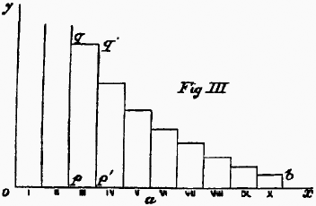
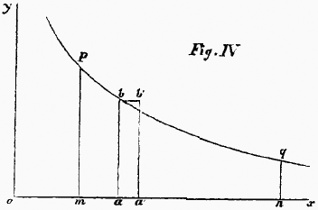
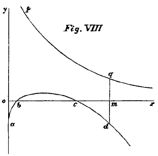

<!doctype html>
<html lang="en">

	<head>
		<meta charset="utf-8">

		<title>reveal.js - ClassHT 2</title>

		<link rel="stylesheet" href="plugin/reveal.css">
		<link rel="stylesheet" href="plugin/beige.css" id="theme">
        <link rel="stylesheet" href="plugin/monokai.css">
        <link rel="stylesheet" href="plugin/title-footer.css">
       
	</head>

	<body>

		<div class="reveal">

			<div class="slides">


                <!-- Slides are separated by three dashes (quick 'n dirty regular expression) -->
                <section data-markdown data-separator="\n---\n" data-separator-vertical="^\n--\n$">
                    <script type="text/template">
                        <!-- .slide: style="text-align: left;" -->
                        # History of Economic Analysis
                        ## PART II: Economics
                        ### Francesco Franco - Nova SBE 
                        ---

                        <!-- .slide: style="text-align: left;" -->
                        ## From Political Economy to Economics
                        
                        - The Classics and pre classics were mainly concerned with:
                            - value: price formation
                            - distribution between classes
                            - growth - dynamics

                        - The Marginalists (first order condition) focus:
                            - on the individual decisions of individuals and firms - utilitarian approach - no classes
                            - focus on demand side of consumers goods and supply of factor markets 
                            - allocation of resources - static
                            - mathematical formalization  -> allows economics to be a cumulative knowledge process

                        ---

                        <!-- .slide: style="text-align: left;" -->
                        ## From Political Economy to Economics

                        - This different approach to economic problems started in the continent where isolated thinkers like Johann Heinrich Von Thunen (1783-1850),
                         Antoine Augustine Cournot (1801-1877), Jules Dupuit (1804-1866), Hermann Heinrich Gossen (1810-1858) approached economic theory by posing less general
                         and more practical questions.
                        
                        - We will only look at Cournot as the unique insights of his major economics work, *Researches into the Mathematical Principles of Wealth* (1838) are without parallel.

                        ---

                         <!-- .slide: style="text-align: left;" -->
                         ## Economics
                         ### Antoine Augustin Cournot 1801-1877

                         The influence of Cournot on the development of modern microeconomics is extremely important. His main contribution was published in 1838, well ahead of the Principles of Mills, representing the final word on Classic Political Economy. To some extent, he was too ahead of his time,
                          and his work would have any substantial impact on the profession before the advent of Walras, Jevons, and Marshall who all report to have read Cournot and to have been greatly influenced by his work.

                          
                        
                        <center></center>

                    

                        ---

                        <!-- .slide: style="text-align: left;" -->
                        #### Mathematics as a language

                        Mathematical principles of the Theory of Wealth - Preface

                        > There are authors, like Smith and Say, who, in writing on Political Economy, have preserved all
                        the beauties of a purely literary style ; but there are others, like Ricardo, who, when treating
                        the most abstract questions, or when seeking great accuracy, have not been able to avoid algebra,
                        and have only disguised it under arithmetical calculations of tiresome length. 
                        Any one who understands algebraic notation, reads at a glance in an equation results reached
                        arithmetically only with great labour and pains.
                        **I propose to show in this essay that the solution of the general
                        questions which arise from the theory of wealth, depends essentially
                        not on elementary algebra, but on that branch of analysis which comprises arbitrary functions,
                        which are merely restricted to satisfying certain conditions**. As only very simple conditions 
                        will be considered, the first principles of the differential and integral calculus suffice for
                        understanding this little treatise. Also, although I fear that it may appear too abstruse to 
                        most people who have a liking for these topics, I hardly dare to hope that it will deserve 
                        the attention of professional mathematicians, except as they may discover in it the germ of
                        questions more worthy of their powers.

                        He shifts the focus from algebra to differential calculus.

                        ---

                        
                        <!-- .slide: style="text-align: left;" -->
                        #### Demand

                        Mathematical principles of the Theory of Wealth - Chapter IV

                        >  To lay the foundations of the theory of exchangeable values, we shall not accompany
                         most speculative writers back to the cradle of the human race 
                         ; we shall undertake to explain neither the origin of property nor that of exchange
                        or division of labour. All this doubdess belongs to the history of mankind, but
                        it has no influence on a theory which could only become applicable at a very advanced state
                        of civilization, at a period when (to use the language of mathematicians) the influence
                        of the initial conditions is entirely gone. 
                        **We shall invoke but a single axiom, or, if you prefer a single hypothesis, i.e. that each
                        one seeks to derive the greatest possible value from his goods or his labour**.

                        > Furthermore, **what is meant by the quantity demanded**?...**The cheaper an article is, the greater ordinarily is the demand for it**. ...We add the word generally as a corrective ;
                         there are, in fact, some objects of whim and luxury which are only desirable on account of their rarity and of the high price which is the consequence thereof.

                        There is a clear shift: history does not matter much. Individuals are "value maximizer" and demand is decreasing in the price.
                        ---

                        <!-- .slide: style="text-align: left;" -->
                        #### Demand

                        More: demand should be modeled as a function.

                        Mathematical principles of the Theory of Wealth - Chapter IV

                        > **Let us admit therefore that the sales or the annual demand $D$ is, for each article, 
                        a particular function $F(p)$ of the price $p$ of such article. To know the form of this function
                        would be to know what we call the law of demand or of sales.**
                        It depends evidently on the kind of utility of the article, on the nature of the services
                        it can render or the enjoyments it can procure, on the habits and customs of the people,
                        on the average wealth, and on the scale on which wealth is distributed. ... 
                        **Observation must therefore be depended on for furnishing the means of drawing up between proper 
                        limits a table of the corresponding values of $D$ and $p$ ; after which, by the well-known methods
                        of interpolation or by graphic processes, an empiric formula or a curve can be made to represent the function 
                        in question**...

                        Here he proposes to derive the demand from observation of prices and quantities. Of course he incurs in a identification problem.

                        > **We will assume that the function $F(p)$**, which expresses the law of demand or of the market,
                        **is a continuous function**,...If the function $F(p)$ is continuous, it will have the property common
                        to all functions of this nature, and on which so many important applications of mathematical
                        analysis are based : the variations of the demand will be sensibly proportional to the variations
                        in price so iong as these last are small fictions of the original price. Moreover,
                        these variations will be of opposite signs, i.e. an increase in price will correspond with a diminution
                        of the demand.

                        ---

                        <!-- .slide: style="text-align: left;" -->
                        #### Demand: Cournot graphical representation
                        
                        <center></center>

                        The axes are reversed relatively to modern textbooks.

                        ---

                        <!-- .slide: style="text-align: left;" -->
                        #### Demand

                        Mathematical principles of the Theory of Wealth - Chapter IV

                        > **Since the function is continuous, the function $pF(p)$ which expresses the total value
                         of the quantity annually sold, must be continuous also**.

                        > Since the function $pF(p)$ at first increases and then decreases as $p$ increases, there is therefore a value of 
                        $p$ which makes this function a **maximum**,
                        and which is given by the equation $$F(p) + pF'(p) = 0$$

                        These are first order conditions.

                        > We know by the theory of maxima and mimima that equation (above) is satisfied as well by the values
                        of $p$ which render $pF(p)$ a minimum as by those which render this product a maximum.
                        The argument used at the beginning of the preceding article shows, indeed, that the function $pF(p)$
                        necessarily has a maximum, **but it might have several and pass through minimum values between**.
                        A root of equation (above) corresponds to a maximum or a minimum according as
                         $$2F'(p)+pF''(p)< or >0$$

                        These are second order conditions
                        

                        

                        ---

                       
                        <!-- .slide: style="text-align: left;" -->
                        #### Monopoly - costs of Producttion

                        Mathematical principles of the Theory of Wealth - Chapter V


                        > ... in which $\phi(D)$ denotes the cost...Since $D$
                          is connected with $p$ by the relation $D=F(p)$...
                          Consequently the price to which the producer should bring his
                          article will be determined by the equation
                          $$D + \frac{dD}{dp}\left[p-\frac{d\left[\phi\left(D\right)\right]}{dD}\right]=0$$


                        ---

                        <!-- .slide: style="text-align: left;" -->
                        #### Duopoly - no costs
  
                        Mathematical principles of the Theory of Wealth - Chapter VII

                        > **Every one has a vague idea of the effects of competition. Theory should have attempted to render this
                          idea more precise; and yet, for lack of regarding the question from the proper point of view 
                            and for want of recourse to symbols of which the use in this connection becomes indispensable**,
                            economic writers have not in the least improved on popular notions in this respect.
                            These notions have remained as ill-defined and ill-applied in their works, as in popular language.
                            To make the abstract idea of monopoly comprehensible, we imagined one spring and one proprietor. 
                            **Let us now imagine two proprietors and two springs of which the qualities are identical**, and which,
                            on account of their similar positions, **supply the same market in competition**.
                            In this case the price is necessarily the same for each proprietor.
                            If $p$ is this price, $D=F(p)$ the total sales, $D_{1}$ the sales from the spring (1) and $D_{2}$
                            the sales from the spring (2), then $D_{1}+D_{2}=D$.
                            If, to begin with, we neglect the cost of production, the respective incomes of the proprietors will be
                            $pD_{1}$ and $pD_{2}$ ; and each of them independently will seek to make this income as large as possible.
                            **We say each independently , and this restriction is very essential**, as will soon appear ;
                            for if they should come to an agreement so as to obtain for each the greatest possible income,
                            the results would be entirely different, and would not differ, so far as consumers are concerned,
                            from those obtained in treating of a monopoly. Instead of adopting $D = F(p)$ as before,
                            in this case it will be convenient to adopt the inverse notation $p=f(D)$
                            and then the profits of proprietors (1) and (2) will be respectively expressed by
                            $$ D_1 \times f(D_1 + D_2) \ and \  D_2 \times f(D_1 + D_2)$$
                            i.e. by functions into each of which enter two variables, $D_1$ and $D_2$

                        ---

                        <!-- .slide: style="text-align: left;" -->
                        #### Duopoly
  
                        Mathematical principles of the Theory of Wealth - Chapter VII
                        
                        >Proprietor (1) can have no direct influence on the determination of $D_2$ : all that he can do,
                        when $D_2$ has been determined by proprietor (2), is to choose for $D_1$ the value which is best for him.
                        This he will be able to accomplish by properly adjusting his price, except as proprietor (2), who, seeing
                        himself forced to accept this price and this value of $D_1$ may adopt a new value for $D_2$ more
                        favourable to his interests than the preceding one.
                        Analytically this is equivalent to saying that $D_1$ will be determined in terms of $D_2$ by the condition
                        $$ \frac{d\left[D_{1}f\left(D_{1}+D_{2}\right)\right]}{dD_{1}}=0$$
                        and that $D_2$ will be determined in terms of $D_1$ by the analogous condition
                        $$ \frac{d\left[D_{2}f\left(D_{1}+D_{2}\right)\right]}{dD_{2}}=0$$ 
                        whence it follows that the final values of $D_1$ and $D_2$, and consequently of $D$ and of $p$,
                        will be determined by the system of equations
                        $$ (1) f\left(D_{1}+D_{2}\right)+D_{1}f'\left(D_{1}+D_{2}\right)=0$$
                        $$ (2) f\left(D_{1}+D_{2}\right)+D_{2}f'\left(D_{1}+D_{2}\right)=0$$

                        ---

                        <!-- .slide: style="text-align: left;" -->
                        #### Duopoly
  
                        Mathematical principles of the Theory of Wealth - Chapter VII

                        <center></center>
                        

                        >  Let us suppose the curve $m_1n_1$  to be the plot of equation (1),
                         and the curve $m_2n_2$ that of equation (2), the variables $D_1$ and $D_2$ being
                        represented by rectangular coordinates. If proprietor (1) should adopt for $D_1$ a value
                        represented by $ox_1$, proprietor (2) would adopt for $D_2$ the value $oy_1$ , which, for
                        the supposed value of $D_1$ would give him the greatest profit.
                         But then, for the same reason, producer (1) ought to adopt for $D_1$ the value $ox_{11}$ , which gives
                        the maximum profit when $D_2$ has the value $oy_1$. This would bring producer (2) to the value $oy_{11}$
                        for $D_2$ and so forth..
                        The state of equilibrium corresponding to the system of values $ox$ and $oy$ is therefore stable... 
                        
                        ---

                        <!-- .slide: style="text-align: left;" -->
                        #### Oligopoly
  
                        Mathematical principles of the Theory of Wealth - Chapter VII

                        > If there were 3, 4, ...$n$ producers in competition, all their conditions being the same,... we obtain
                        $$D+\frac{dD}{dp}\left[np-\sum\phi_{n}'\left(D_{n}\right)\right]=0$$
                        ... 
                        It now remains to be proved that the value of $p$ derived from equation (Monopoly) is always greater than the value of $p$
                        derived from equation (monopoly).


                        ---

                        <!-- .slide: style="text-align: left;" -->
                        #### Perfect competition
  
                        Mathematical principles of the Theory of Wealth - Chapter VII


                        > The effects of competition have reached their limit, when each of the partial productions $D_k$
                        is **inappreciable** not only with reference to the total production $D = F(p)$but also with reference to the derivative
                        $F'(p)$ so that the partial production $D_k$ could be subtracted from $D$
                        without any appreciable variation resulting in the price of the commodity.... 
                        According to this hypothesis, in the equation
                        $$D_k + \frac{dD}{dp}\left[p-\frac{d\left[\phi_k\left(D_k\right)\right]}{dD}\right]=0$$ the term $D_k$ can be neglected without sensible error,
                        which reduces the equation to $$p-\phi_k(D_k) =0$$
                        In consequence, the system of equations of the preceding chapter will be replaced by
                        $$p-\phi_1(D_1) =0,p-\phi_2(D_2) =0,...,p-\phi_n(D_n) =0$$
                        These $n$ equations together with $$D_1+D_2+...+D_n=F(p),$$
                        will determine all the unknown quantities $p$ and $D_1$,$D_2$,...,$D_n$.
                        If we conceive of all the equations of (i) as solved with reference to $D_1$,$D_2$,...,$D_n$
                        the first member of equation (2) will become a function of $p$, which we can represent by $\Omega(p)$,
                        so that this equation can be written in the very simple form
                        $$\Omega(p)-F(p)=0.$$
                        In the hypothesis under consideration, all the functions $\phi_k'(D_k)$ must be be considered to increase
                        with $D_k$. 
                        
                        ---


                        <!-- .slide: style="text-align: left;" -->
                        ### Stanley Jevons 1835 - 1882

                        <center></center>

                        The use of the utility is a key contribution of Jevons, who, in his words, treats the economy as a "calculus of pleasure and pain" and leads him to
                        a theory of value that depends only on utility. An individual maximizing his utility his led the right amount of consumption whose value depends entirely on the
                        "final degree of utility" and not on labor content as previously argued by the Classics.

                        A second innovation is that Jevons uses the same approach to determine the labor supply. 


                        ---


                        <!-- .slide: style="text-align: left;" -->

                        ### Mathematics to formulate Political Economy

                        Theory of Political Economy - Preface first edition 1871

                        > The contents of the following pages can hardly meet with ready
                        acceptance among those who regard the Science of Political Economy has
                        having already acquired a nearly perfect form. I believe it is generlly
                        supposed that Adam Smith laid the foundations of this science ; that
                        Malthus, Anderson, and Senior added important doctrines; that Ricardo
                        systematised the whole; and, finally, that Mr. J.S. Mill filled in the
                        details and completely expounded this branch of knowledge...

                        > ...In this work I have attempted **to treat Economy as Calculus of
                        Pleasure and Pain** and have sketched out, almost irrespective of previous
                        opinions, the form which the science, as it seems to me, must ultimately
                        take. I have long thought that as it deals throughout with quantities,
                        it must be a mathematical science in matter if not in language. I
                        endeavoured to arrive at accurate quantitative notions concerning
                        Utility, Value, Labour, Capital, etc., and I have often been surprised
                        to find how clearly some of **the most difficult notion**, especially that
                        most puzzling of notions **Value, admit of mathematical analysis and
                        expression**. **The Theory of Economy thus treated presents a close analogy
                        to the science of Statical Mechanics, and the Laws of Exchange are found
                        to resemble the Laws of Equilibrium of a lever as determined by the
                        principle of virtual velocities.**

                        He thinks he is proposing a revolution.

                        ---

                        <!-- .slide: style="text-align: left;" -->
                        ### From Political Economy to Economics                       

                        Theory of Political Economy - Preface to the second edition 1879 

                        > In short, I do not write for mathematicians, nor as a mathematician, but
                        as an economist wishing to convince other economists that their science
                        can only be safactorily treated on an explicitly mathematical basis...

                        > ...Among minor alterations, **I may mention the substitution for the name
                        Political Economy of the single convenient term Economics.** This term,
                        besides being more familiar and closely related to the old term is
                        perfectly analogous in form to Mathematics, Ethics, Esthetics, and the
                        names of various other branches of knowledge, and it has moreover the
                        authority of usage from the time of Aristotle...but **it appears to have
                        been adopted also by Mr. Alfred Marshall** at Cambridge.

                        > ...The earlier treatise of Cournot, his admirable Recherche sur le
                        principes Mathematiques de la Theorie des Richesses (Paris 1838),
                        resembles Dupuit's memoirs in being, until the last few years, quite
                        unkwonwn to English economists...**Cournot did not frame any ultimate
                        theory of the ground and nature of utility and value**, but, taking the
                        palpable facts known concerning the relations of price, production and
                        consumption of commodities, he investigated these relations analytically
                        and diagraphically with a power and felicity which leaves little to be
                        desired. ..It should be added that his investigation has little relation
                        to the contents of this work, because Cournot does not recede to any
                        theory of utility, but commences with the phenomenal laws of supply and
                        demand.

                        > From this statement it is quite apparent that Gossen has completely
                        anticipated me as regards the general principles and method of the
                        theory of Economics.

                        But the revolution already occurred.

                        ---

                        <!-- .slide: style="text-align: left;" -->

                        ### Theory of value based on utility

                        Theory of Political Economy - Introduction

                        > Repeated reflection and inquiry have led me to the somewhat novel
                        opinion, that **value depends entirely upon utility**. Prevailing opinions
                        make labour rather than utility the origin of value; and there are even
                        those who distinctly assert that labour is the cause of value. I show,
                        on the contrary, that we have only to trace out carefully the natural
                        laws of the variation of utility, as depending upon the quantity of
                        commodity in our possession, in order to arrive at a satisfactory theory
                        of exchange, of which the ordinary laws of supply and demand are a
                        necessary consequence. This theory is in harmony with facts; and,
                        whenever there is any apparent reason for the belief that labour is the
                        cause of value, we obtain an explanation of the reason. **Labour is found
                        often to determine value, but only in an indirect manner, by varying the
                        degree of utility of the commodity through an increase or limitation of
                        the supply** ....

                      

                        ---

                        <!-- .slide: style="text-align: left;" -->

                        ### Utility

                        Theory of Political Economy - The theory of Utility - Chapter III 

                        > **Pleasure and pain are undoubtedly the ultimate objects of the Calculus
                        of Economics. To satisfy our wants to the utmost with the least
                        effort, to procure the greatest amount of what is desirable at the
                        expense of the least that is undesirable in other words, to maximise
                        pleasure, is the problem of Economics.**

                        > **By a commodity we shall understand any object, substance, action, or
                        service, which can afford pleasure or ward off pain...and employ the
                        term utility to denote the abstract quality whereby an object serves our
                        purposes, and becomes entitled to rank as a commodity.**

                        > My principal work now lies in tracing out the **exact nature and
                        conditions of utility**. It seems strange indeed that economists have not
                        bestowed more minute attention on a subject which doubtless furnishes
                        the true key to the problem of Economics. 
                        ---

                        <!-- .slide: style="text-align: left;" -->

                       

                        Theory of Political Economy - The theory of Utility - Chapter III

                        > **Utility must
                        be considered as measured by, or even as actually identical with, the
                        addition made to a person's happiness.** It is a convenient name for the
                        aggregate of the favorable balance of feeling produced, the sum of the
                        pleasure created and the pain prevented. **We must now carefully
                        discriminate between the total utility arising from any commodity and
                        the utility attaching to any particular portion of it.** Thus the total
                        utility of the food we eat consists in maintaining life, and may be
                        considered as infinitely great; but if we were to subtract a tenth part
                        from what we eat daily, our loss would be but slight. We should
                        certainly not lose a tenth part of the whole utility of food to us. It
                        might be doubtful whether we should suffer any harm at all.

                        > Let us imagine the whole quantity of food which a person consumes on an
                        average during twenty- four hours to be divided into ten equal parts. If
                        his food be reduced by the last part, he will suffer but little; if a
                        second tenth part be deficient, he will feel the want distinctly; the
                        subtraction of the third tenth part will be decidedly injurious; with
                        every subsequent subtraction of a tenth part his sufferings will be more
                        and more serious, until at length he will be upon the verge of
                        starvation. Now, if we call each of the tenth parts an increment, the
                        meaning of these facts is, that each increment of food is less
                        necessary, or possesses less utility, than the previous one. To explain
                        this variation of utility we may make use of space representations,
                        which I have found convenient in illustrating the laws of economics in
                        my college lectures during fifteen years past.

                        ---

                        <!-- .slide: style="text-align: left;" -->

                        Theory of Political Economy - The theory of Utility - Chapter III

                        <center></center>

                        > Let the line $ox$ be used as a measure of the quantity of food, and let it
                        be divided into ten equal parts to correspond to the ten portions of
                        food mentioned above. Upon these equal lines are constructed rectangles
                        and the area of each rectangle may be assumed to represent the utility
                        of the increment of food corresponding to its base. Thus the utility of
                        the last increment is small, being proportional to the small rectangle
                        on X. As we approach towards o, each increment bears a larger rectangle,
                        that standing upon III being the largest complete rectangle. **The utility
                        of the next increment, II, is undefined, as also that of I, since these
                        portions of food would be indispensable to life, and their utility,
                        therefore, infinitely great**.

                        ---

                        <!-- .slide: style="text-align: left;" -->

                        ### Utility is a continous function

                        Theory of Political Economy - The theory of Utility - Chapter III

                        > But the division of the food into ten equal parts is an arbitrary
                        supposition. If we had taken twenty or a hundred or more equal parts,
                        the same general principle would hold true, namely, that each small
                        portion would be less useful and necessary than the last. The law may be
                        considered to hold true theoretically, however small the increments are
                        made; and in this way we shall at last reach a figure which is
                        undistinguishable from a continuous curve. **The notion of infinitely
                        small quantities of food may seem absurd as regards the consumption of
                        one individual; but when we consider the consumption of a nation as a
                        whole, the consumption may well be conceived to increase or diminish by
                        quantities which are, practically speaking, infinitely small compared
                        with the whole consumption.** The laws which we are about to trace out are
                        to be conceived as theoretically true of the individual; they can only
                        be practically verified as regards the aggregate transactions,
                        productions, and consumptions of a large body of people. But the laws of
                        the aggregate depend of course upon the laws applying to individual
                        cases....

                        Today we know that we cannot use what holds for an individual to hold at the aggregate level
                        except in special cases and in the case of the representative agent.

                        ---

                        <!-- .slide: style="text-align: left;" -->

                        Theory of Political Economy - The theory of Utility - Chapter III

                        > Let $x$ signify, as is usual in mathematical books, the quantity which
                        varies independently, in this case the quantity of commodity. Let $u$
                        denote the **whole utility** proceeding from the consumption of $x$. Then
                        $u$ will be, as mathematicians say, a function of $x$; that is, it will
                        vary in some continuous and regular, but probably unknown, manner, when
                        x is made to vary...Our great object at present, however, is to express the **degree of utility**.


                        <center></center>

                        > We find these considerations fully illustrated by Fig. IV., in which oa
                        represents $x$, and $ab$ is the degree of utility at the point $a$. Now,
                        if we increase $x$ by the small quantity $aa'$, or $\Delta  x$, the utility is increased
                         by the small rectangle $abb'a'$, or $\Delta    u$; and, since a rectangle is the product of its sides,
                          we find that the length of the line ab, the degree of utility, is represented by the fraction
                           $\frac{\Delta u}{\Delta x}$.

                        ---

                        <!-- .slide: style="text-align: left;" -->


                        Theory of Political Economy - The theory of Utility - Chapter III

                        > As already explained, however, the utility of a commodity may be
                        considered to vary with perfect continuity, so that we commit a small
                        error in assuming it to be uniform over the whole increment $\Delta x$. To
                        avoid this we must imagine $\Delta x$ to be reduced to an infinitely small
                        size, Du decreasing with it. The smaller the quantities are the more
                        nearly we shall have a correct expression for $ab$, the degree of
                        utility at the point $a.$ **Thus the limit of this fraction
                        $\frac{\Delta u}{\Delta x}$ or, as it is commonly expressed
                        $\frac{du}{dx}$ , is the degree of utility corresponding to the quantity
                        of commodity $x$**. The degree of utility is, in mathematical language,
                        the differential coefficient of $u$ considered as a function of $x$, and
                        will itself be another function of $x$.

                        > **We shall seldom need to consider the degree of utility except as regards
                        the last increment which has been consumed**, or, which comes to the same
                        thing, the next increment which is about to be consumed. I shall
                        therefore commonly use the expression **final degree of utility, as
                        meaning the degree of utility of the last addition**, or the next possible
                        addition of a very small, or infinitely small, quantity to the existing
                        stock. In ordinary circumstances, too, the final degree of utility will
                        not be great compared with what it might be.

                        > **The final degree of utility is that function upon which the theory of
                        economics will be found to turn**. Economists, generally speaking, have
                        failed to discriminate between this function and the total utility, and
                        from this confusion has arisen much perplexity. Many commodities which
                        are most useful to us are esteemed and desired but little. We cannot
                        live without water, and yet in ordinary circumstances we set no value on
                        it. Why is this? Simply because we usually have so much of it that its
                        final degree of utility is reduced nearly to zero. We enjoy every day
                        the almost infinite utility of water, but then we do not need to consume
                        more than we have. Let the supply run short by drought, and we begin to
                        feel the higher degrees of utility, of which we think but little at
                        other times.

                    

                        ---

                        <!-- .slide: style="text-align: left;" -->

                        ### Exchange - Value

                        Theory of Political Economy - Theory of Exchange - chapter IV 


                        > I must, in the first place, point out the thoroughly ambiguous and
                        unscientific character of the term value. Adam Smith noticed the extreme
                        difference of meaning between value in use and value in exchange; and it
                        is usual for writers on Economics to caution their readers against the
                        confusion of thought to which they are liable.

                      
                        > **The keystone of the whole Theory of Exchange, and of the principal
                        problems of Economics, lies in this proposition---The ratio of exchange
                        of any two commodities will be the reciprocal of the ratio of the final
                        degrees of utility of the quantities of commodity available for
                        consumption after the exchange is completed.** When the reader has
                        reflected a little upon the meaning of this proposition, he will see, I
                        think, that it is necessarily true, if the principles of human nature
                        have been correctly represented in previous pages.

                        ---

                        <!-- .slide: style="text-align: left;" -->

                        Theory of Political Economy - Theory of Exchange - chapter IV


                        > Imagine that there is one trading body possessing only corn, and another
                        possessing only beef. It is certain that, under these circumstances, a
                        portion of the corn may be given in exchange for a portion of the beef
                        with a considerable increase of utility. How are we to determine at what
                        point the exchange will cease to be beneficial? This question must
                        involve both the ratio of exchange and the degrees of utility. Suppose,
                        for a moment, that the ratio of exchange is approximately that of ten
                        pounds of corn for one pound of beef: then if, to the trading body which
                        possesses corn, ten pounds of corn are less useful than one of beef,
                        that body will desire to carry the exchange further. Should the other
                        body possessing beef find one pound less useful than ten pounds of corn,
                        this body will also be desirous to continue the exchange. Exchange will
                        thus go on until each party has obtained all the benefit that is
                        possible, and loss of utility would result if more were exchanged. Both
                        parties, then, rest in satisfaction and equilibrium, and the degrees of
                        utility have come to their level, as it were. **This point of equilibrium
                        will be known by the criterion, that an infinitely small amount of
                        commodity exchanged in addition, at the same rate, will bring neither
                        gain nor loss of utility. In other words, if increments of commodities
                        be exchanged at the established ratio, their utilities will be equal for
                        both parties.** Thus, if ten pounds of corn were of exactly the same
                        utility as one pound of beef, there would be neither harm nor good in
                        further exchange at this ratio.... 
                        
                        > To represent this process of
                        reasoning in symbols, let $\Delta x$ denote a small increment of corn, and $\Delta y$ a
                        small increment of beef exchanged for it. Now our Law of Indifference
                        comes into play. As both the corn and the beef are homogeneous
                        commodities, no parts can be exchanged at a different ratio from other
                        parts in the same market: hence, if $x$ be the whole quantity of corn
                        given for $y$ the whole quantity of beef received, $y$ must have the same
                        ratio to $x$ as $y$ to $x$; we have then,
                        $$\frac{\Delta y}{\Delta x}=\frac{y}{x}  \\ or \\  \Delta y=\frac{y}{x}\Delta x.$$

                        ---

                        <!-- .slide: style="text-align: left;" -->

                        Theory of Political Economy - Theory of Exchange - chapter IV


                        > In a state of equilibrium, the utilities of these increments must be
                        equal in the case of each party, in order that neither more nor less
                        exchange would be desirable. Now the increment of beef,$\Delta y$, is
                        $y/x$ times as great as the increment of corn, $\Delta x$, so that, in
                        order that their utilities shall be equal, the degree of utility of beef
                        must be $x/y$ times as great as the degree of utility of corn.

                        > Thus we arrive at the principle that the degrees of utility of commodities
                         exchanged will be in the inverse proportion of the magnitudes of the
                        increments exchanged. Let us now suppose that the first body, $A$,
                        originally possessed the quantity $a$ of corn, and that the second body, $B$,
                        possessed the quantity $b$ of beef. As the exchange consists in giving $x$ 
                        of corn for $y$ of beef, the state of things after exchange will be as follows:
                                         $A$ holds $a-x$ of corn, and $y$ of beef,
                        $B$ holds $x$ of corn, and $b-y$ of beef.
                        Let $\varphi_{1}(a-x)$ denote the final degree of utility of corn to A,
                        and $\varphi_{2}(x)$ the corresponding function for $x$.
                        Also let $\psi_{1}(y)$ denote A’s final degree of utility for beef, and $\psi_{2}(b-y)$ B’s similar function.
                         Then, as explained previously will not be satisfied unless the following equation holds true: $$\phi_{1}\left(a-x\right)dx	=\psi_{1}(y)dy \\\\
                        or\\ 	\frac{\phi_{1}\left(a-x\right)}{\psi_{1}(y)}=\frac{dy}{dx}$$

                        ---

                        <!-- .slide: style="text-align: left;" -->

                        Theory of Political Economy - Theory of Exchange - chapter IV

                        > Hence, substituting for the second member by the equation given
                        previously, we have
                        $$\frac{\phi_{1}(a-x)}{\psi_{1}(y)}=\frac{y}{x}$$ What holds
                        true of A will also hold true of B, mutatis mutandis. He must also
                        derive exactly equal utility from the final increments, otherwise it
                        will be for his interest to exchange either more or less, and he will
                        disturb the conditions of exchange. Accordingly [substituting as
                        before] the following final equation must hold true... :
                        $$\frac{\phi_{2}\left(x\right)}{\psi_{2}\left(b-y\right)}=\frac{y}{x}$$
                        We arrive, then at the conclusion that whenever two commodities are
                        exchanged for each other, and more or less can be given or received in
                        infinitely small quantities, the quantities exchanged satisfy two
                        equations, which may be stated thus in a concise form
                        $$\frac{\phi_{1}\left(a-x\right)}{\psi_{1}y}=\frac{y}{x}=\frac{\phi_{2}\left(x\right)}{\psi_{2}\left(b-y\right)}$$

                                              
                        > But though labour is never the cause of value, it is in a large
                        proportion of cases the determining circumstance, and in the following
                        way: Value depends solely on the final degree of utility. How can we
                        vary this degree of utility? By having more or less of the commodity to
                        consume. And how shall we get more or less of it? By spending more or
                        less labour in obtaining a supply. I will re-state it in a tabular form,
                        as follows:
                        **Cost of production determines supply.
                        Supply determines final degree of utility.
                        Final degree of utility determines value.
                        But it is easy to go too far in considering labour as the regulator of
                        value**;

                        ---


        

                        <!-- .slide: style="text-align: left;" -->

                        ### Labour supply

                        Theory of Political Economy - The theory of Labour - chapter V


                        > Let us endeavour to form a clear notion of what we mean by **amount of
                        labour**. It is plain that **duration** will be one element of it; for a
                        person labouring uniformly during two months must be allowed to labour
                        twice as much as during one month. But labour may vary also in
                        **intensity**. In the same time a man may walk a greater or less distance;
                        may saw a greater or less amount of timber; may pump a greater or less
                        quantity of water; in short, may exert more or less muscular and nervous
                        force. Hence amount of labour will be a quantity of two dimensions, the
                        product of intensity and time when the intensity is uniform, or the sum
                        represented by the area of a curve when the intensity is variable.

                        > But intensity of labour may have more than one meaning; it may mean the
                        quantity of work done, or the painfulness of the effort of doing it.
                        These two things must be carefully distinguished, and both are of great
                        importance for the theory. The one is the reward, the other the penalty,
                        of labour. Or rather, as the produce is only of interest to us so far as
                        it possesses utility, we may say that there are three quantities
                        involved in the theory of labour the amount of painful exertion, the
                        amount of produce, and the amount of utility gained. **The variation of
                        utility, as depending on the quantity of commodity possessed, has
                        already been considered; the variation of the amount of produce will be
                        treated in the next chapter; we will here give attention to the
                        variation of the painfulness of labour.**

                        ---


                        <!-- .slide: style="text-align: left;" -->


                        Theory of Political Economy - The theory of Labour - chapter V 

                        <center></center>
                        

                        > We may imagine the painfulness of labour in proportion to produce to be
                        represented by some such curve as $abcd$ in Fig VIII. In this diagram the
                        height of points above the line ox denotes pleasure, and depth below it
                        pain. At the moment of commencing labour it is usually more irksome than
                        when the mind and body are well bent to the work. Thus, at first, the
                        pain is measured by $oa$. At $b$ there is neither pain nor pleasure.
                        Between $b$ and $c$ an excess of pleasure is represented as due to the
                        exertion itself. But after $c$ the energy begins to be rapidly
                        exhausted, and the resulting pain is shown by the downward tendency of
                        the line $cd$.


                        > We may at the same time represent the degree of utility of the produce by Somecurve as $pq$, the amount 
                        of produce being measured along the line $ox$. Agreeably to the theory of utility, already given
                        the curve shows that, the larger the wages earned, the less is the pleasure derived from a further increment.
                        There will, of necessity be some point $m$ such that $qm=dm$, that is to say, such that that the pleasure gained is exactly equal to the labour endured.

                        ---

            
                        <!-- .slide: style="text-align: left;" -->

                        Theory of Political Economy - The theory of Labour - chapter V 


                        > It may tend to give the reader confidence in the preceding theories when
                        he finds that they lead directly to the well-known law, as stated in the
                        ordinary language of economists, that value is proportional to the cost
                        of production. As I prefer to state the same law, it is to the effect
                        that the ratio of exchange of commodities will conform in the long run
                        to the ratio of productiveness, which is the reciprocal of the ratio of
                        the costs of production.

                        > To simplify our expressions, let us substitute for the rate of
                        production $\frac{dx}{dl}$ the symbol $\bar{\omega}$. Then
                        `$\bar{\omega}_{1}$`
                        , `$\bar{\omega}_{2}$` express the relative quantities of
                        two different commodities produced by an increment of labour...so that
                        we may at once deduce the all-important equation
                        `$\frac{\bar{\omega}_{2}}{\bar{\omega}_{1}}=\frac{y_{1}}{x_{1}}$`.

                        

                        > **Value is of course very frequently estimated by price**, that is, by the
                        quantity of legal money for which the commodity may be exchanged. Price
                        is indeed ambiguous in the same way as value; it means either the price
                        of the whole quantity, or the price per unit of the quantity. Let
                        $p_{1}$ be the price per unit of $X$, and $p_{2}$ the similar price of
                        $Y$. Then it is apparent that $y\times p_{2}$ will be the whole price of
                        $y$, and $x\times p_{1}$ will be the whole price of $x$. These two must
                        be equal to each other, so that we get
                        $\frac{y}{x}=\frac{p_{1}}{p_{2}}$.


                        > Turning now to the production of commodity, it is sufficiently obvious
                        that the cost of production, so far as this expression can be accurately
                        interpreted, varies as the reciprocal of the degree of productiveness.
                        The rate of wages remaining constant, the cost per unit of commodity
                        must of course be lower as the quantity produced in return for a certain
                        amount of wages is greater. Thus we may lay down the equation:

                        <center></center>

                        Jevons almost complete the reasoning the arrive to general equilibrium but not yet.


                        ---

                        


                        <!-- .slide: style="text-align: left;" -->
                        ### References

                        - Antoine Augustin Cournot (1838). (English version 1897) Researches into the Mathematical Principles of the Theory of Wealth. Macmillan.

                        - Stanley Jevons The Theory of Political Economy (London: Macmillan, 1888) 3rd ed

                        - Screpanti, Ernesto & Zamagni, Stefano, 1995. "An Outline of the History of Economic Thought," OUP Catalogue, Oxford University Press

                        - Sandmo, Agnar.  (2011).  Economics evolving : a history of economic thought.  Princeton, N.J :  Princeton University Press.

                       
                    </script>
                </section>

            </div>
		</div>

		<script src="plugin/reveal.js"></script>
        <script src="plugin/markdown.js"></script>
        <script src="plugin/highlight.js"></script>
        <script src="plugin/notes.js"></script>
        <script src="plugin/plugin.js"></script>
        <script src="plugin/math.js"></script>
        <script src="plugin/plugin.js"></script>
        <script src="plugin/menu.js"></script>
        <script src="plugin/pdfexport.js"></script>
		<script>

			Reveal.initialize({
				controls: true,
				progress: true,
				history: true,
                center: true,
                touch: true,

                menu: {
                    // Specifies which side of the presentation the menu will
                    // be shown. Use 'left' or 'right'.
                    side: 'left',

                    // Specifies the width of the menu.
                    // Can be one of the following:
                    // 'normal', 'wide', 'third', 'half', 'full', or
                    // any valid css length value
                    width: 'normal',

                    // Add slide numbers to the titles in the slide list.
                    // Use 'true' or format string (same as reveal.js slide numbers)
                    numbers: true,

                    // Specifies which slide elements will be used for generating
                    // the slide titles in the menu. The default selects the first
                    // heading element found in the slide, but you can specify any
                    // valid css selector and the text from the first matching
                    // element will be used.
                    // Note: that a section data-menu-title attribute or an element
                    // with a menu-title class will take precedence over this option
                    titleSelector: 'h1, h2, h3, h4, h5, h6',

                    // If slides do not have a matching title, attempt to use the
                    // start of the text content as the title instead
                    useTextContentForMissingTitles: false,

                    // Hide slides from the menu that do not have a title.
                    // Set to 'true' to only list slides with titles.
                    hideMissingTitles: false,

                    // Adds markers to the slide titles to indicate the
                    // progress through the presentation. Set to 'false'
                    // to hide the markers.
                    markers: true,

                    // Specify custom panels to be included in the menu, by
                    // providing an array of objects with 'title', 'icon'
                    // properties, and either a 'src' or 'content' property.
                    custom: false,

                    // Specifies the themes that will be available in the themes
                    // menu panel. Set to 'true' to show the themes menu panel
                    // with the default themes list. Alternatively, provide an
                    // array to specify the themes to make available in the
                    // themes menu panel, for example...
                    //
                    // [
                    //     { name: 'Black', theme: 'dist/theme/black.css' },
                    //     { name: 'White', theme: 'dist/theme/white.css' },
                    //     { name: 'League', theme: 'dist/theme/league.css' },
                    //     {
                    //       name: 'Dark',
                    //       theme: 'lib/reveal.js/dist/theme/black.css',
                    //       highlightTheme: 'lib/reveal.js/plugin/highlight/monokai.css'
                    //     },
                    //     {
                    //       name: 'Code: Zenburn',
                    //       highlightTheme: 'lib/reveal.js/plugin/highlight/zenburn.css'
                    //     }
                    // ]
                    //
                    // Note: specifying highlightTheme without a theme will
                    // change the code highlight theme while leaving the
                    // presentation theme unchanged.
                    themes: false,

                    // Specifies the path to the default theme files. If your
                    // presentation uses a different path to the standard reveal
                    // layout then you need to provide this option, but only
                    // when 'themes' is set to 'true'. If you provide your own
                    // list of themes or 'themes' is set to 'false' the
                    // 'themesPath' option is ignored.
                    themesPath: 'dist/theme/',

                    // Specifies if the transitions menu panel will be shown.
                    // Set to 'true' to show the transitions menu panel with
                    // the default transitions list. Alternatively, provide an
                    // array to specify the transitions to make available in
                    // the transitions panel, for example...
                    // ['None', 'Fade', 'Slide']
                    transitions: false,

                    // Adds a menu button to the slides to open the menu panel.
                    // Set to 'false' to hide the button.
                    openButton: true,

                    // If 'true' allows the slide number in the presentation to
                    // open the menu panel. The reveal.js slideNumber option must
                    // be displayed for this to take effect
                    openSlideNumber: false,

                    // If true allows the user to open and navigate the menu using
                    // the keyboard. Standard keyboard interaction with reveal
                    // will be disabled while the menu is open.
                    keyboard: true,

                    // Normally the menu will close on user actions such as
                    // selecting a menu item, or clicking the presentation area.
                    // If 'true', the sticky option will leave the menu open
                    // until it is explicitly closed, that is, using the close
                    // button or pressing the ESC or m key (when the keyboard
                    // interaction option is enabled).
                    sticky: false,

                    // If 'true' standard menu items will be automatically opened
                    // when navigating using the keyboard. Note: this only takes
                    // effect when both the 'keyboard' and 'sticky' options are enabled.
                    autoOpen: true,

                    // If 'true' the menu will not be created until it is explicitly
                    // requested by calling RevealMenu.init(). Note this will delay
                    // the creation of all menu panels, including custom panels, and
                    // the menu button.
                    delayInit: false,

                    // If 'true' the menu will be shown when the menu is initialised.
                    openOnInit: false,

                    // By default the menu will load it's own font-awesome library
                    // icons. If your presentation needs to load a different
                    // font-awesome library the 'loadIcons' option can be set to false
                    // and the menu will not attempt to load the font-awesome library.
                    loadIcons: true
                },

                dependencies:
                [
                    { src: 'plugin/title-footer.js', async: true, callback: function() { title_footer.initialize(); } }
                ],
                math: {
                    mathjax: 'https://cdn.jsdelivr.net/gh/mathjax/mathjax@2.7.8/MathJax.js',
                    config: 'TeX-AMS_HTML-full',
                    // pass other options into `MathJax.Hub.Config()`
                    TeX: { Macros: { RR: "{\\bf R}" } }
                    },
        
                chalkboard: {
                    boardmarkerWidth: 3,
                    chalkWidth: 2.5,
                    chalkEffect: 1,
                    src: null,
                    readOnly: undefined,
                    toggleChalkboardButton: { left: "90px", bottom: "30px", top: "auto", right: "auto" },
                    toggleNotesButton: { left: "60px", bottom: "30px", top: "auto", right: "auto" },
                    transition: 800,
                    theme: "whiteboard",
                    background: [ 'rgba(127,127,127,.1)' , path + 'img/whiteboard.png' ],
                    grid: { color: 'rgba(127,127,127,.1)', distance: 80, width: 0.01},
                    eraser: { src: path + 'img/sponge.png', radius: 20},
                    boardmarkers : [
                            { color: 'rgba(127,127,127,1)', cursor: 'url(' + path + 'img/boardmarker-black.png), auto'},
                            { color: 'rgba(30,144,255, 1)', cursor: 'url(' + path + 'img/boardmarker-blue.png), auto'},
                            { color: 'rgba(220,20,60,1)', cursor: 'url(' + path + 'img/boardmarker-red.png), auto'},
                            { color: 'rgba(50,205,50,1)', cursor: 'url(' + path + 'img/boardmarker-green.png), auto'},
                            { color: 'rgba(255,140,0,1)', cursor: 'url(' + path + 'img/boardmarker-orange.png), auto'},
                            { color: 'rgba(150,0,20150,1)', cursor: 'url(' + path + 'img/boardmarker-purple.png), auto'},
                            { color: 'rgba(255,220,0,1)', cursor: 'url(' + path + 'img/boardmarker-yellow.png), auto'}
                    ],
                    chalks: [
                            { color: 'rgba(255,255,255,0.5)', cursor: 'url(' + path + 'img/chalk-white.png), auto'},
                            { color: 'rgba(96, 154, 244, 0.5)', cursor: 'url(' + path + 'img/chalk-blue.png), auto'},
                            { color: 'rgba(237, 20, 28, 0.5)', cursor: 'url(' + path + 'img/chalk-red.png), auto'},
                            { color: 'rgba(20, 237, 28, 0.5)', cursor: 'url(' + path + 'img/chalk-green.png), auto'},
                            { color: 'rgba(220, 133, 41, 0.5)', cursor: 'url(' + path + 'img/chalk-orange.png), auto'},
                            { color: 'rgba(220,0,220,0.5)', cursor: 'url(' + path + 'img/chalk-purple.png), auto'},
                            { color: 'rgba(255,220,0,0.5)', cursor: 'url(' + path + 'img/chalk-yellow.png), auto'}
                    ]
                },
                

				plugins: [ RevealMarkdown, RevealHighlight, RevealNotes,RevealMath, RevealMenu, RevealChalkboard, PdfExport]
			});

		</script>

	</body>
</html>
